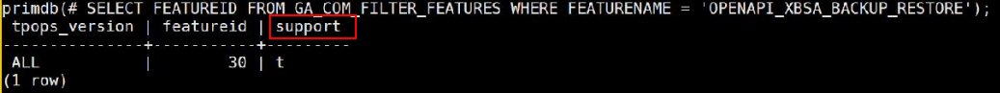

Before the GaussDB backup function is used, you need to enable the XBSA feature and XBSA PITR feature whitelists to ensure the normal backup function.
Enable the XBSA Feature Whitelist (Applicable to Full Backup, Incremental Backup, and Log Backup)
su - dmuser
source $HOME/.dmbashrc; source $DM_HOME/primdb/.infostore; gsql -d primdb -p 22202 -r -U apprim -W dmuser password
UPDATE PUBLIC.GA_COM_TPOPS_FEATURES SET SUPPORT = TRUE WHERE FEATUREID = ( SELECT FEATUREID FROM GA_COM_FILTER_FEATURES WHERE FEATURENAME = 'OPENAPI_XBSA_BACKUP_RESTORE');
SELECT * FROM PUBLIC.GA_COM_TPOPS_FEATURES WHERE FEATUREID = ( SELECT FEATUREID FROM GA_COM_FILTER_FEATURES WHERE FEATURENAME = 'OPENAPI_XBSA_BACKUP_RESTORE');
The following shows a command output example (if the value of support is t, the whitelist is enabled successfully):

UPDATE PUBLIC.GA_COM_TPOPS_FEATURES SET SUPPORT = FALSE WHERE FEATUREID = ( SELECT FEATUREID FROM GA_COM_FILTER_FEATURES WHERE FEATURENAME = 'OPENAPI_XBSA_BACKUP_RESTORE');
Enable the XBSA PITR Whitelist (Applicable to Log Backup)
su - dmuser
source $HOME/.dmbashrc; source $DM_HOME/primdb/.infostore; gsql -d primdb -p 22202 -r -U apprim -W dmuser password
UPDATE PUBLIC.GA_COM_TPOPS_FEATURES SET SUPPORT = TRUE WHERE FEATUREID = ( SELECT FEATUREID FROM GA_COM_FILTER_FEATURES WHERE FEATURENAME = 'TPOPS_PITR');
SELECT * FROM PUBLIC.GA_COM_TPOPS_FEATURES WHERE FEATUREID = ( SELECT FEATUREID FROM GA_COM_FILTER_FEATURES WHERE FEATURENAME = 'TPOPS_PITR');
UPDATE PUBLIC.GA_COM_TPOPS_FEATURES SET SUPPORT = FALSE WHERE FEATUREID = ( SELECT FEATUREID FROM GA_COM_FILTER_FEATURES WHERE FEATURENAME = 'TPOPS_PITR');